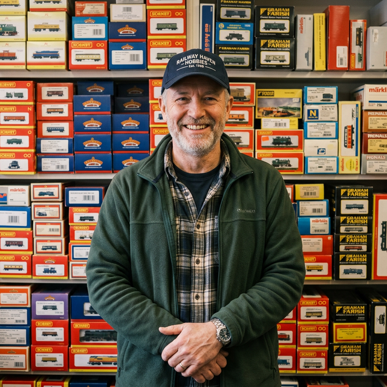

Our Story
About Iron Rail
A community founded on passion, built on knowledge, and running on the shared love of every spike, tie, and prototype mile.
Mission Statement
Why We Exist
Iron Rail was founded in 2008 by a small group of serious hobbyists who were tired of scattered forums and paywalled magazines. We believe that model railroading — one of the oldest and most craft-intensive hobbies in North America — deserves a dedicated home on the modern internet.
Our mission is simple: preserve the hobby, share the knowledge, and celebrate the craft at every scale. From the beginner unboxing their first Bachmann starter set to the advanced modeler scratchbuilding an entire prototype division, everyone has a place on this railroad.
We are fully community-owned and community-moderated. No corporate overlords. No algorithm feeds. Just thousands of people who love trains — and love sharing what they know about them.

Community Standards
Community Guidelines
Iron Rail thrives because of mutual respect and shared passion. These four principles keep our community running smoothly.
Respect First
Every member — beginner or veteran — is treated with courtesy. Dismissive, condescending, or rude replies are not tolerated. We were all new once.
Stay On Topic
Keep posts relevant to model railroading, railroad history, layout building, and related crafts. Off-topic posts will be moved or removed by moderators.
Fair Reviews
Product reviews must be honest, based on firsthand experience, and free from brand bias. Manufacturers cannot pay for positive reviews. All ratings are verified.
Original Content
Only post photos and content you own or have explicit permission to share. Credit your sources. Watermarked stolen content will result in an immediate ban.
Scale Reference
A Brief History of Model Train Scales
Understanding the scale you model in is foundational. Each standard emerged from different eras, different needs, and different modelers. Here's a quick primer on the three scales our community focuses on.
O Scale — The Original
O scale (1:48 ratio in the US, 1:45 in Europe) is the oldest standardized model train scale, popularized in the early 20th century by companies like Märklin and Ives. Lionel made O gauge a household name from the 1920s through the 1950s. The larger size makes it ideal for fine detailing and is still beloved by collectors of postwar equipment.
HO Scale — The Workhorse
Meaning "Half-O," HO scale (1:87.1) emerged in the 1930s as a space-saving alternative that didn't sacrifice detail. By the 1960s it had become — and remains — the world's most popular model railroad scale. The huge range of manufacturers (Athearn, Walthers, Kadee, Kato, Bowser) means unmatched availability of locomotives, rolling stock, and structures.
N Scale — The Space Saver
N scale (1:160) was commercialized in the early 1960s by Arnold Rapido in Germany as a truly compact alternative. The name comes from "nine" — the 9mm gauge between the rails. N scale allows you to model impressive mainline runs with multiple trains in the space where an HO layout would only fit a short branch line. Kato and Micro-Trains have elevated N scale to remarkable levels of fidelity.
The Crew
Meet the Moderators

Earl Whitmore
Founder & Admin
HO modeler since 1971. Southern Railway prototype specialist. 40+ years of weathering experience.
Linda Hargrove
Gallery Curator
N scale minimalist and layout photographer. Creator of the famous "N in a Drawer" challenge.

Bob Pacheco
Forum Moderator
O gauge Lionel postwar collector and DCS/Legacy electronics expert with 800+ forum posts.

Sasha Reyes
Tech & DCC Mod
Electronics engineer and DCC/sound specialist. Runs the annual decoder comparison shootout thread.
Keep the Tradition Alive
Iron Rail is 100% volunteer-run. Whether you're a DCC expert, a history buff, or just a great community moderator, we need your help to keep this railroad running on time. Join our crew and help us build the future of model railroading.